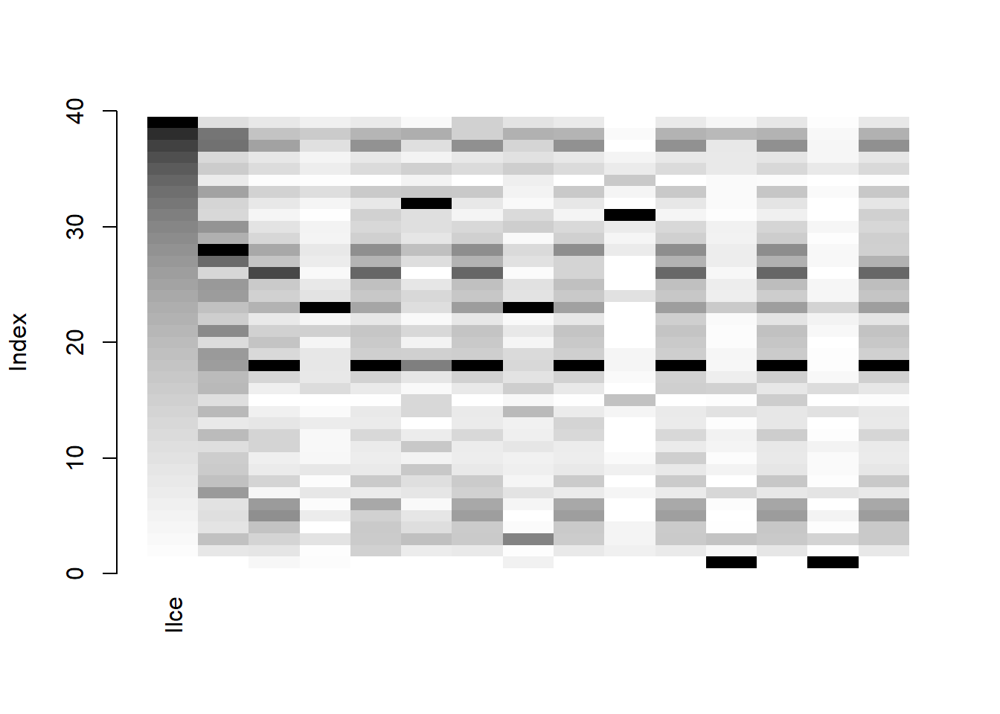

#Kütüphaneler
library(readr)
library(readxl)
library(ggplot2)
library(dplyr)
library(Amelia)
library(naniar)
library(VIM)
library(magrittr)
#Veri Setini Akatarma
veri<-read_excel("19-vdym-ilce-baznda-hanelerdeki-arac-sahiplii-durumu.xlsx")
View(veri)R Final Proje
# İlçe Bazında Hanelerdeki Araç Sahiplik Durumu
-Veri Analizi-
# Verimizde 39 satır 15 sütun olduğu görülüyor.
dim(veri)[1] 39 15# Summary fonksiyonu ile bütün değişkenlerin istatistiksel özetini elde ettim. Bu özet, her bir değişkenin minimum, maksimum, ortalama, medyan ve çeyreklikler gibi temel istatistiksel değerlerini barındırıyor.
summary(veri) Ilce ozel otomobil Arac Var ozel otomobil Arac Yok
Length:39 Min. : 21.0 Min. : 188.0
Class :character 1st Qu.:194.5 1st Qu.: 610.0
Mode :character Median :338.0 Median : 897.0
Mean :327.6 Mean : 963.3
3rd Qu.:444.5 3rd Qu.:1222.5
Max. :650.0 Max. :2505.0
Isyeri tarafindan saglanan arac Var isyeri tarafindan saglanan arac Yok
Min. : 1.00 Min. : 358
1st Qu.: 7.00 1st Qu.: 813
Median : 13.00 Median :1266
Mean : 19.77 Mean :1270
3rd Qu.: 25.00 3rd Qu.:1514
Max. :122.00 Max. :2918
Ticari arac/Is makinesi Var Ticari arac/Is makinesi Yok Motosiklet Var
Min. : 0.000 Min. : 362.0 Min. : 1.0
1st Qu.: 2.000 1st Qu.: 824.5 1st Qu.: 6.0
Median : 4.000 Median :1286.0 Median :12.0
Mean : 4.897 Mean :1284.9 Mean :14.9
3rd Qu.: 6.500 3rd Qu.:1543.5 3rd Qu.:18.5
Max. :19.000 Max. :2928.0 Max. :58.0
Motosiklet Yok Traktor ve diger tarim makineleri Var
Min. : 354 Min. : 0.000
1st Qu.: 818 1st Qu.: 0.000
Median :1276 Median : 0.000
Mean :1275 Mean : 2.179
3rd Qu.:1535 3rd Qu.: 2.000
Max. :2924 Max. :24.000
Traktor ve diğer tarim makineleri Yok Yetiskin boy bisiklet Var
Min. : 361.0 Min. : 0.00
1st Qu.: 826.5 1st Qu.: 3.50
Median :1289.0 Median : 9.00
Mean :1287.7 Mean :14.74
3rd Qu.:1548.5 3rd Qu.:18.00
Max. :2941.0 Max. :97.00
Yetiskin boy bisiklet Yok Elektrikli scooter Var Elektrikli scooterYok
Min. : 265 Min. : 0.00 Min. : 313
1st Qu.: 812 1st Qu.: 0.50 1st Qu.: 824
Median :1276 Median : 2.00 Median :1287
Mean :1275 Mean : 4.59 Mean :1285
3rd Qu.:1542 3rd Qu.: 4.00 3rd Qu.:1545
Max. :2936 Max. :49.00 Max. :2942 # Doğrusal regresyon analizi yapmak için lm() fonksiyonunu kullandım ve elde ettiğim sonuçlara göre İş yeri tarafından sağlanan araç olmayınca, özel otombil araç sahipliği arasında doğrusal bir ilişkinin olduğunu söyleyebilirim.
lm(`isyeri tarafindan saglanan arac Yok` ~ `ozel otomobil Arac Var` , data = veri)
Call:
lm(formula = `isyeri tarafindan saglanan arac Yok` ~ `ozel otomobil Arac Var`,
data = veri)
Coefficients:
(Intercept) `ozel otomobil Arac Var`
573.336 2.127 # Summary(lm) fonksiyonunu kullanarak iş yeri tarafından sağlanan araç ve özel otomobil sahipliği arasındaki ilişkinin anlamlılığını F testi ile değerlendirdim ve bu ilişkinin anlamlı olduğunu söyleyebilirim.
summary(lm(`isyeri tarafindan saglanan arac Yok` ~ `ozel otomobil Arac Var` , data = veri))
Call:
lm(formula = `isyeri tarafindan saglanan arac Yok` ~ `ozel otomobil Arac Var`,
data = veri)
Residuals:
Min 1Q Median 3Q Max
-743.05 -261.79 -106.91 24.55 1528.25
Coefficients:
Estimate Std. Error t value Pr(>|t|)
(Intercept) 573.3355 197.1776 2.908 0.006122 **
`ozel otomobil Arac Var` 2.1269 0.5471 3.888 0.000405 ***
---
Signif. codes: 0 '***' 0.001 '**' 0.01 '*' 0.05 '.' 0.1 ' ' 1
Residual standard error: 513.4 on 37 degrees of freedom
Multiple R-squared: 0.29, Adjusted R-squared: 0.2708
F-statistic: 15.11 on 1 and 37 DF, p-value: 0.0004053# İş yeri tarafından sağlanan araç ve özel otomobil sahipliği arasındaki ilişkinin dağılım Nokta grafiği aşağıda çizdirdim.
grafik =ggplot(veri,aes(`isyeri tarafindan saglanan arac Yok`,`ozel otomobil Arac Var`))
grafik + geom_point()# any(is.na()) fonksiyonun FALSE vermesi , veri de Boş Gözlem bulunmadğı anlamına geliyor.
any(is.na(veri))[1] FALSE# Amelia ,naniar ve VIM paketleri ile birlikte missmap ,vis_miss ve matrixplot fonksiyonlari kullanılarak, veri setinde herhangi bir boş gözlemin olmadığını net bir şekilde görülebilir.
Amelia::missmap(veri)Warning: Unknown or uninitialised column: `arguments`.
Unknown or uninitialised column: `arguments`.Warning: Unknown or uninitialised column: `imputations`.
vis_miss(veri)
VIM::matrixplot(veri)# -Rastgele Gözlem Silme-
# veri setinin her sütununa (ilk sütün hariç) verinin yüzde 10 una denk gelecek şeklide rastgele veriler silindi.
yuzde <- 0.10
for(column in names(veri)[-1]) {
na_count <- floor(yuzde * nrow(veri))
na_indices <- sample(1:nrow(veri), na_count)
veri[na_indices, column] <- NA
}# missmap ,vis_miss ve matrixplot fonksiyonlar ile veri setine sine boş gözlemler(NA) değeri atandığını görülebilir.
any(is.na(veri))[1] TRUEAmelia::missmap(veri)Warning: Unknown or uninitialised column: `arguments`.
Unknown or uninitialised column: `arguments`.Warning: Unknown or uninitialised column: `imputations`.vis_miss(veri)vis_miss(veri)
# Boş gözlem ataması sonrası iş yeri tarafından sağlanan araç yok ile özel otomobil araç var Karşılaştırılması:
marginplot(veri[,c("isyeri tarafindan saglanan arac Yok","ozel otomobil Arac Var")])# Her sütündaki Toplam NA değerleri
veri %>% is.na() %>% colSums() Ilce ozel otomobil Arac Var
0 3
ozel otomobil Arac Yok Isyeri tarafindan saglanan arac Var
3 3
isyeri tarafindan saglanan arac Yok Ticari arac/Is makinesi Var
3 3
Ticari arac/Is makinesi Yok Motosiklet Var
3 3
Motosiklet Yok Traktor ve diger tarim makineleri Var
3 3
Traktor ve diğer tarim makineleri Yok Yetiskin boy bisiklet Var
3 3
Yetiskin boy bisiklet Yok Elektrikli scooter Var
3 3
Elektrikli scooterYok
3 # -Boş Gözlem Doldurma-
for(col in names(veri)) {
if(is.numeric(veri[[col]])) {
column_mean <- mean(veri[[col]], na.rm = TRUE)
veri[[col]] <- ifelse(is.na(veri[[col]]), column_mean, veri[[col]])
}
}# Son olarak da tekrar Amelia ,naniar ve VIM paketleri ile birlikte missmap ,vis_miss ve matrixplot fonksiyonlari kullanılarak Boş gözlemlerin dolduğunu görebiliyoruz.
any(is.na(veri))[1] FALSEAmelia::missmap(veri)Warning: Unknown or uninitialised column: `arguments`.
Unknown or uninitialised column: `arguments`.Warning: Unknown or uninitialised column: `imputations`.
vis_miss(veri)VIM::matrixplot(veri)